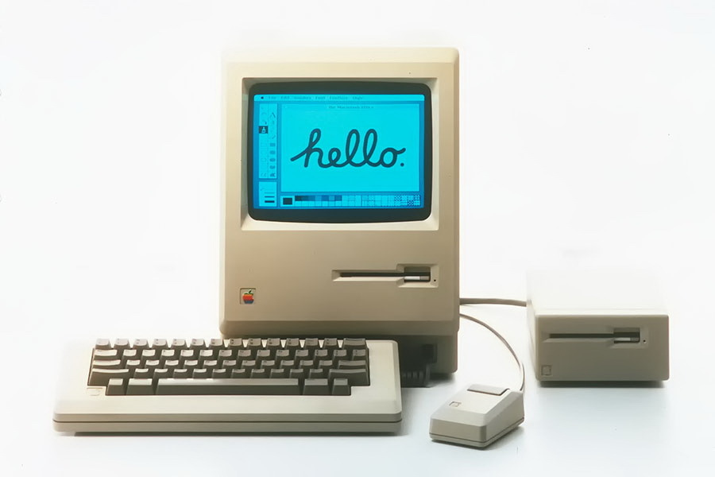

-
Inicio de la quinta generación
-

1984
Apple Computer crea la Macintosh, la primera computadora con interfaz gráfica, la analogía del escritorio y un nuevo periferico: el mouse.
-

1994
Se da la conectividad entre computadoras, con el advenimiento de la red Internet y del World Wide Web.